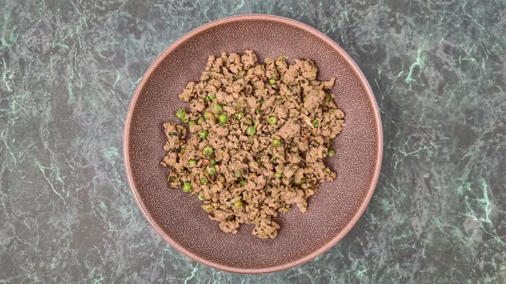
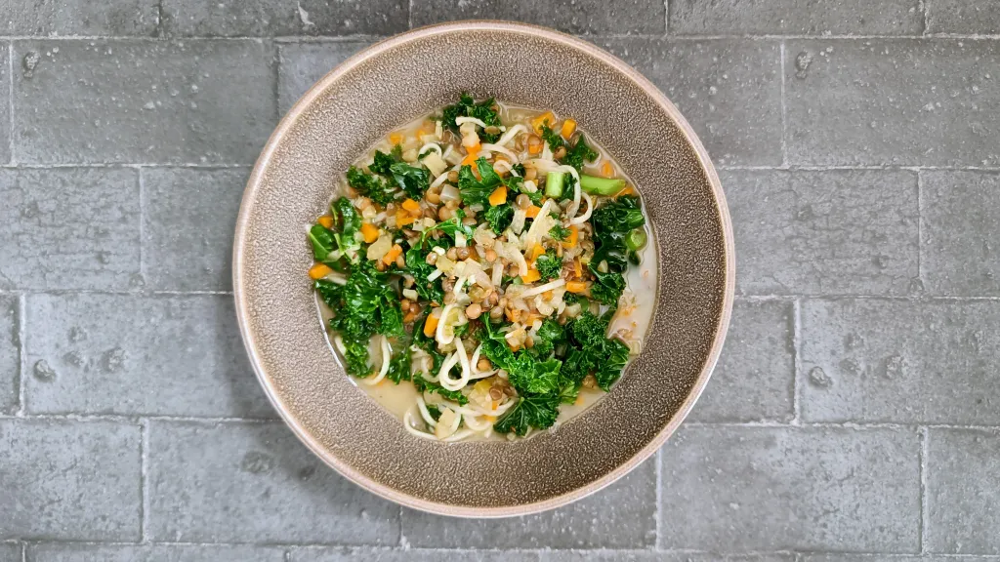

Most recent recipes
Spinach and rice
50 mins
Serves 4

Crispy ginger & chilli pork fried rice
30 mins
Serves 4

Double lemon chicken with cheat’s preserved lemon
1 hr
Serves 4

Harissa kofta lettuce cups with preserved lemon yogurt
35 mins
Serves 10

Yogurt & spice roasted salmon
20 mins
Serves 4

Duck & black bean tostadas
50 mins
Serves 4
Gingerbread blondies
55 mins
Serves 24

Keema pau
1 hr 10 mins
Serves 3-4

Keema puffs
35 mins
Serves 12
Roasted potato, onion and fennel tagine with sumac and balsamic vinegar
1 hr 10 mins
Serves 4
Gazan beef, chickpeas and swiss chard
2 hr 20 mins
Serves 4
Black sea orzo and toasted vermicelli pilaf with haddock
50 mins
Serves 4

Bean stew with cheese flatbreads and pickled onions
1 hr 5 mins
Serves 4

Kale, fennel and noodle soup
1 hr 20 mins
Serves 4
